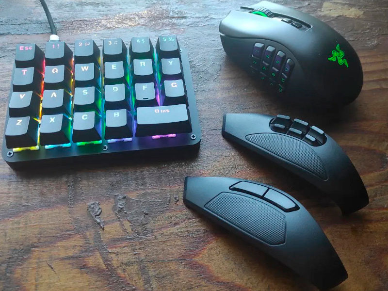
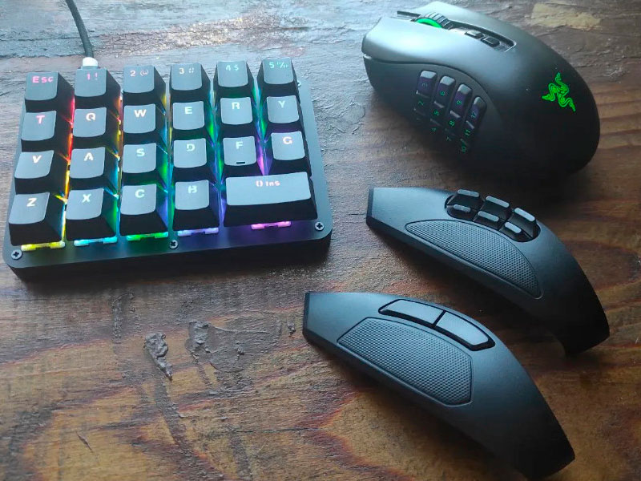

Macropad 23 key
Макропад с 23 клавишами
 

Заказывал
здесь
При заказе указывал следующие параметры:
- Color: Gateron Switch
- Axis Body: Brown Switch
Esc
1!
2@
4$
3#
5%
T
Q
W
E
R
Y
V
A
S
D
F
G
Z
X
C
B
0 Ins
Функции
- Назначение клавиш обычной клавиатуры, клавишам макропада
- Назначение сочетаний клавиш клавитуры, клавишам макропада
- Назначение быстрых макросов (12 шт.)
- Назначение макросов (12 шт.)
- Использование 4 слоёв с настройкой каждого слоя отдельно
- Настраиваемая RGB подсветка
Комлектация
- Макропад
- Кабель USB на USB-C
- Кейкапер
Программное обеспечение
Продавец данного девайса, предоставил мне программное обеспечение, которое называется AMAG (так называется иcполнительный файл ПО) или AMAKeyboardClient (данное название можно увидеть в заголовке, после запуска ПО).
Скачать ПОИнтерфейс AMAG
После запуска ПО, откроется как правило окно первой влкадки. ПО имеет 4 основные вкладки:
- Keymapper
- Custom Macro
- Quick Macro
- Options